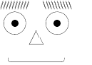
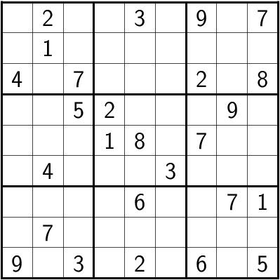

I’ve just finished my second Jekyll plugin: the jekyll-liquid-latex-plugin. This plugin for the Jekyll blogging software extends the rendering system allowing you to render \(\LaTeX\) pieces of code inside your post. The result will be an image placed instead of the block of \(\LaTeX\) code, so you don’t need to access any other software tool to compile \(\LaTeX\) inside your posts.
The plugin
You can access it’s source code, clone it and/or use it from Gitlab: https://gitlab.com/felix.galindo/jekyll-liquid-latex-plugin
This plugin is able to render \(\LaTeX\) block code as if you have a complete \(\LaTeX\) document. Instead of a full DVI, EPS, or PDF file, this plugin renders the \(\LaTeX\) block to PNG and inserts an <img> tag instead.
This, simply put, allows you to write this inside any of your posts:
{% latex %}
\begin{eqnarray*}
(A\cup B)-(C-A) &=& (A\cup B) \cap (C-A)^c\\
&=& (A\cup B) \cap (C \cap A^c)^c \\
&=& (A\cup B) \cap (C^c \cup A) \\
&=& A \cup (B\cap C^c) \\
&=& A \cup (B-C)
\end{eqnarray*}
{% endlatex %}And you’ll get:
\[ \begin{eqnarray*} (A\cup B)-(C-A) &=& (A\cup B) \cap (C-A)^c\\ &=& (A\cup B) \cap (C \cap A^c)^c \\ &=& (A\cup B) \cap (C^c \cup A) \\ &=& A \cup (B\cap C^c) \\ &=& A \cup (B-C) \end{eqnarray*} \]
Another example:
{% latex density=72 %}
\begin{picture}(100,100)(0,0)
\setlength{\unitlength}{1pt}
\put(20,70){\circle{30}} \put(20,70){\circle*{10}} % left eye
\put(80,70){\circle{30}} \put(80,70){\circle*{10}} % right eye
\put(40,40){\line(1,2){10}} \put(60,40){\line(-1,2){10}} \put(40,40){\line(1,0){20}} % nose
\put(50,20){\oval(80,10)[b]} % mouth
\multiput(0,90)(4,0){10}{\line(1,3){4}} % left eyebrow
\multiput(100,90)(-4,0){10}{\line(-1,3){4}} % right eyebrow
\end{picture}
{% endlatex %}And get this:

Another example, you write in your post:
{% latex density=100 usepackages=sudoku %}
\begin{sudoku}
| |2| | |3| |9| |7|.
| |1| | | | | | | |.
|4| |7| | | |2| |8|.
| | |5|2| | | |9| |.
| | | |1|8| |7| | |.
| |4| | | |3| | | |.
| | | | |6| | |7|1|.
| |7| | | | | | | |.
|9| |3| |2| |6| |5|.
\end{sudoku}
{% endlatex %}The result will be this:

As you can see, this last example depends on the sudoku package to be installed in your system. If you are using TeXLive, you must install it if it’s not already there:
sudo tlmgr install sudokuInstallation
Just copy the liquid_latex.rb file to the _plugins folder.
Requirements
Obviously you must have a LaTeX installation of some kind (like TeXLive) and some additional software capable of transforming a EPS file to its corresponding PNG equivalent (like ImageMagick).
Configuration
There are several configuration parameters that you can define in your _config.yml. Here is a sample of such items:
# ...
# ... your _config.yml file ...
# ...
# Liquid-LaTeX plugin
liquid_latex:
debug: false
density: 300
usepackages: pst-all,pst-3dplot
output_directory: /res/latex
latex_cmd: "latex -interaction=nonstopmode $texfile &> /dev/null"
dvips_cmd: "dvips -E $dvifile -o $epsfile &> /dev/null"
convert_cmd: "convert -density $density $epsfile $pngfile &> /dev/null"
temp_filename: "latex_temp"An explanation of those parameters follows:
_config.xml parameters for this plugin:
| Parameter | Type | Value |
|---|---|---|
debug |
boolean | Activates the debug mode with which you can see the compilation commands that are executed during build. Default value: false |
density |
numeric | Density for the conversion of PostScript (EPS) to PNG. Default value:300 |
usepackages |
string | Name of the packages (as a list of comma-separated) that will be passed globally to each block of \(\LaTeX\) code. They will be added individually to their corresponding \usepackage{...} lines in the temporary \(\LaTeX\) file. Default value: empty string (no packages) |
output_directory |
string | Path in which the generated PNG will be placed. Default value: /latex |
temp_filename |
string | Name of the temporary file that will be generated for the compilation process. Default value: latex_temp |
latex_cmd |
string | Command line to execute for the .tex to .div conversion. Default value: latex -interaction=nonstopmode $texfile &> /dev/null |
dvips_cmd |
string | Command line to execute for the .dvi to .eps conversion. Default value: dvips -E $dvifile -o $epsfile &> /dev/null |
convert_cmd |
string | Command line to execute for the .eps to .png conversion. Default value: convert -density $density $epsfile $pngfile &> /dev/null |
In these last three parameters you can use the following variables:
Substitution variables for the command line configurations:
| Variable | Value |
|---|---|
$texfile |
Name of the LaTeX temporary file |
$dvifile |
Name of the DVI temporary file |
$epsfile |
Name of the EPS temporary file |
$pngfile |
Name of the generated PNG file |
$density |
Density value that will be used by the conversion |
This variables makes you able to choose which software you use for the whole conversion process. The sample shown above, as well as the default parameters, where defined for use with TeXLive and ImageMagick.
If you don’t use a certain parameter, it will take the default value. If you are happy with all the default values you can omit the whole liquid-latex section in your _config.xml.
Notes
The plugin doesn’t recompile a previously rendered block of \(\LaTeX\). It takes into consideration a change in the text or a change in the arguments (density and packages used). This reduces the total time of the building process.
Aside, you can delete all the contents of your \(\LaTeX\) generated blocks in the source directory if you want to make a backup copy of your site. It will be completelly regenerated when you rebuild your site.
Also, this plugin keeps the folder of generated images in a clean state. That is, there will be only those images that are used in your site. All previously generated images will be deleted if they are detected as orphaned from the posts.
If you are trying to generate a picture with PSTricks, I recommend to insert the PSTricks code inside a TeXtoEPS environment. This ensures a perfect crop of the generated image.
For example:
{% latex density=72 usepackages=pst-all,pst-eps %} \begin{TeXtoEPS} \begin{pspicture}(0,0)(7,2) \psframe(0,0)(7,2) \psline(0,0)(7,2) \psline(7,0)(0,2) \end{pspicture} \end{TeXtoEPS} {% endlatex %}